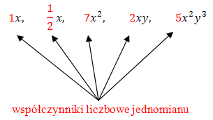
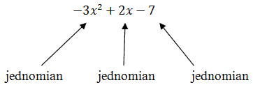

Jednomiany - to liczby i litery połączone
znakiem mnożenia.
Przykłady jednomianów: \[x,\quad \frac{1}{2}x,\quad x^2,\quad
2xy,\quad 5x^2y^3,\quad -\frac{2}{3}abc\]
Liczbę występującą w jednomianie nazywa się
współczynnikiem liczbowym jednomianu. 
Każdy jednomian musi mieć współczynnik liczbowy. W przypadku, gdy nie jest on
zapisany, to znaczy, że jest równy \(1\).
Kolejność zapisywania składników jednomianu nie ma znaczenia (bo mnożenie jest
przemienne). Dla porządku warto jednak zawsze zapisywać współczynnik liczbowy na początku
jednomianu, a następnie literki w kolejności alfabetycznej.
Przedstaw jednomian \(2x\cdot 7\) w postaci uporządkowanej i podaj jego
współczynnik liczbowy.
Wszystkie liczby wymnażamy i zapisujemy na początku
jednomianu: \[2x\cdot 7=2\cdot 7x=14x\] Współczynnik liczbowy tego jednomianu jest równy \(14\).
Przedstaw jednomian \(x^2\cdot 5x\cdot 2\) w postaci uporządkowanej i podaj jego
współczynnik liczbowy.
Wszystkie liczby wymnażamy i zapisujemy na początku
jednomianu. Dodatkowo wymnażamy \(x\)-y: \[x^2\cdot 5x\cdot 2=5\cdot 2\cdot x^2\cdot x=10x^3\]
Współczynnik liczbowy tego jednomianu jest równy \(10\).
Przedstaw jednomian \(x\cdot x^5\cdot x^2\) w postaci uporządkowanej i podaj jego
współczynnik liczbowy.
W tym przykładzie występuje tylko jedna literka \(x\) w
różnych potęgach. Wymnażamy wszystkie potęgi, zapisując cały jednomian jako jedną potęgę
\(x\)-a. \[x\cdot x^5\cdot x^2=x^8\] Współczynnik liczbowy tego jednomianu jest równy \(1\).
Przedstaw jednomian \(2x^2y\cdot 3xyz\) w postaci uporządkowanej i podaj jego
współczynnik liczbowy.
Liczbę zapisujemy na początku, a następnie wymnażamy
literki: \[2x^2y\cdot 3xyz=6x^3y^2z\] Współczynnik liczbowy tego jednomianu jest równy \(6\).
W tym nagraniu wideo omawiam najważniejsze fakty dotyczące jednomianów.
Wyrażenia algebraiczne składają się z jednomianów.  Można zatem powiedzieć, że wyrażenia algebraiczne - to
jednomiany połączone znakami dodawania i odejmowania.